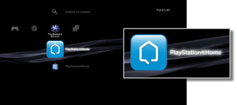

PlayStation®Network > Aperçu de PlayStation®Home
Aperçu de PlayStation®Home
PlayStation®Home est une communauté de jeu social 3D sur PlayStation®Network qui donne aux utilisateurs du système PS3™ la possibilité de rencontrer d'autres utilisateurs de systèmes PS3™ et de discuter avec eux. Vous devez créer (en vous inscrivant) un compte PlayStation®Network pour utiliser ces fonctionnalités. Pour plus de détails sur l'utilisation de PlayStation®Home, visitez le site Web SCE de votre région.
Démarrage de PlayStation®Home
Pour utiliser PlayStation®Home, vous devez tout d'abord télécharger et installer l'application PlayStation®Home. Sélectionnez  (PlayStation®Home) sous
(PlayStation®Home) sous  (PlayStation®Network) afin de télécharger l'application. Suivez les instructions affichées pour achever l'installation.
(PlayStation®Network) afin de télécharger l'application. Suivez les instructions affichées pour achever l'installation.

Conseils
- Pour installer PlayStation®Home, vous devez disposer d'au moins 3 Go d'espace libre sur le disque dur du système PS3™.
- (PlayStation®Home) n'est disponible que dans certaines régions et dans certaines langues. Par ailleurs, les types de contenus fournis dans (PlayStation®Home) varient selon le pays ou la région de résidence. Pour plus de détails, contactez la ligne d'assistance technique de votre région.
Fermeture de PlayStation®Home
Pour quitter PlayStation®Home, appuyez sur la touche PS de la manette sans fil, puis sélectionnez  (Quitter) sous (PlayStation®Network).
(Quitter) sous (PlayStation®Network).
Suppression de PlayStation®Home
L'application PlayStation®Home peut être supprimée du disque dur. Sélectionnez (PlayStation®Home) sous (PlayStation®Network), appuyez sur la touche  , puis sélectionnez [Supprimer] dans le menu d'options.
, puis sélectionnez [Supprimer] dans le menu d'options.
Conseil
Même si l'application est supprimée, l'icône (PlayStation®Home) ne disparaît pas du menu XMB™. Vous pouvez sélectionner cette icône pour télécharger à nouveau PlayStation®Home.